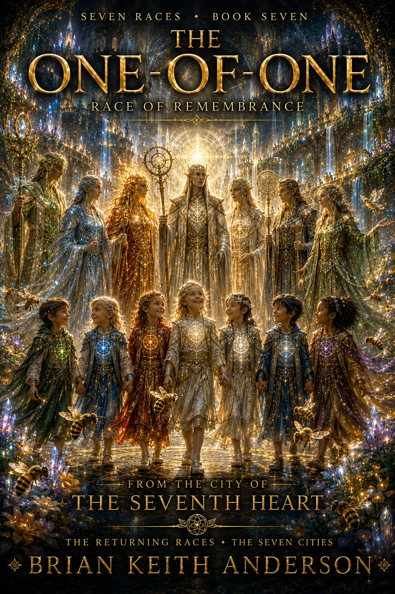

Beneath the City of One Resonance, the final awakening begins. The seven races have returned. The cities are alive. The bogs breathe once more. The children have completed their calling.
Yet the last lesson belongs not to a race of many, but to one. The One-of-One is the oldest memory of Mars, the first awareness given form, waiting quietly through ages of silence until all things are ready to remember what they have always been.
As Asa, Saxifraga, the children, and the returned races gather beneath the living city, they discover that every lesson of patience, movement, emergence, restraint, passage, and interconnection has been guiding them toward a single truth.
Nothing was ever truly separate. The bees, the bogs, the cities, the races, and humanity itself belong to one living resonance. In the final return, the One-of-One reveals that belonging is not something that must be created. It is something that must be remembered.
The journey that began with awakening ends in unity as Mars, at last, remembers itself.
Buy Direct Read Sample Back to Series{kind=link}